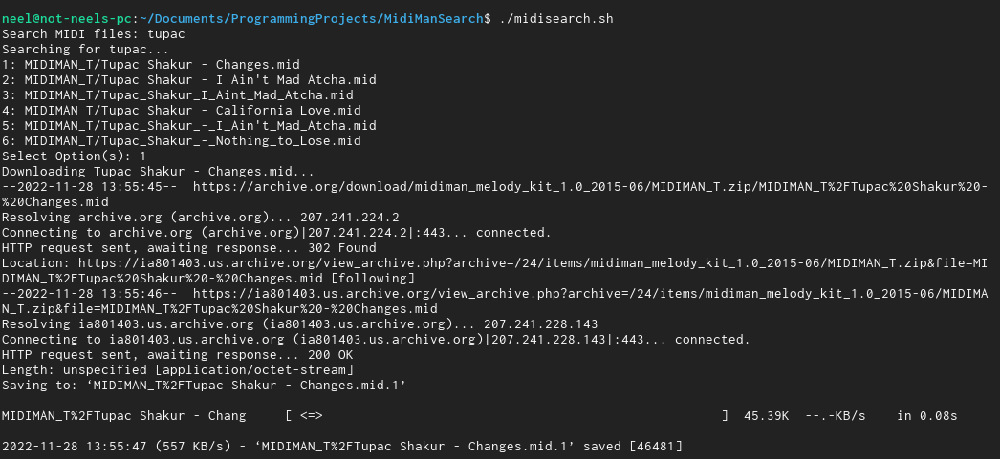

MidiMan Search
November 2022
Search and download MIDI files from MIDIMAN's Melody Kit in a BASH terminal.
 Github RepoWallpaper Theme Converter
May 2022
A Javascript project that converts any image to any colour palette. You can adjust the colours to a wallpaper to better match your setup, terminal, and/or IDE. There are some theme presets such as Gruvbox, Nord, Solarized, Catppuccin, Dracula, and a custom theme.
 Link to Project
Blog post explanation
Github Repo
Link to Project
Blog post explanation
Github Repo
Albums
June 2022
A Javascript project that lists many of the albums that I listen to and contains data that can be manipulated in such a way that someone can discover a new album from my recommendations. Currently a work in progress.
Link to Project Github Repo